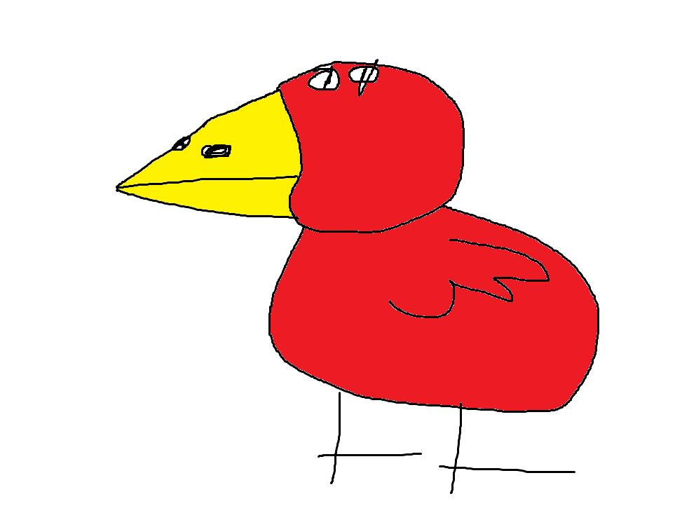

Donald est le Canard Feu. Il est de type Défense et ses différentes compétences assureront la protection pour votre équipe!
Compétences :
Comp. 1 : Charge! : Fonce sur un ennemis avec 25% de chances de l'assomer.
Comp. 2 : Position Défensive : Appel etes frères canards pour créer un bouclier de canard. Ce bouclier est l'équivalent de la moitié de tes PV Max. Tour de temps de pause : 4 tours.
Comp. 3 : Famille défensive "passif" : Tu as 10% de chances d'activer "Position Défensive" chaque fois que tu prends des dégâts.
